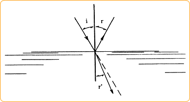
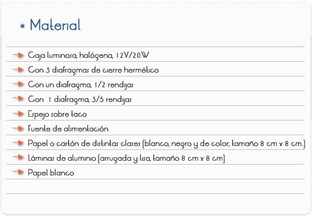
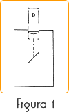
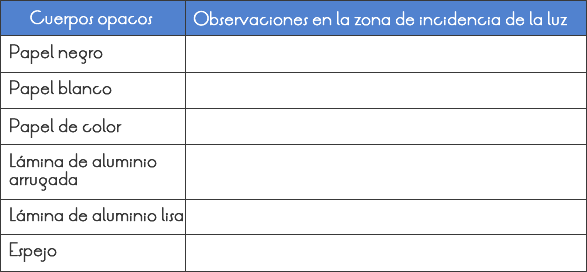
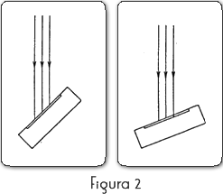
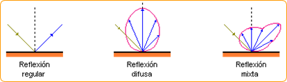

Introducción
La hipótesis de los rayos rectos luminosos no es la única hipótesis de la óptica geométrica. Para explicar el fenómeno de la reflexión de la luz (Figura 4) es necesario suponer que la dirección de los rayos luminosos cambia en algunas circunstancias. Una imagen en un espejo se ve como si el objeto estuviera atrás, y no frente a éste. La óptica geométrica explica este familiar fenómeno suponiendo que los rayos luminosos cambian de dirección al llegar al espejo. La forma precisa en que ocurre este cambio se conoce como ley de la reflexión de la luz. Es una ley muy sencilla: los rayos incidente y reflejado hacen ángulos iguales con el espejo; o con la perpendicular al espejo, que es como suelen medirse estos ángulos (Figura 10). Esta ley, por cierto, también se puede deducir aplicando la ley de variación del tamaño aparente con la distancia para explicar los tamaños aparentes de un objeto y de su imagen en un espejo plano. O, dicho de otra forma, si vemos nuestra imagen en un espejo plano del tamaño que la vemos es porque los rayos incidente y reflejado forman ángulos iguales con el espejo.

Figura 10. La ley de la reflexión de la luz: el ángulo de incidencia, i, y el de reflexión, r, de un rayo luminoso sobre una superficie son iguales; esto es i = r.
La ley de la refracción de la luz: el seno del ángulo de incidencia, sen i, y el seno del ángulo de refracción, sen r', de un rayo luminoso que atraviesa la superficie de separación de dos medios transparentes están en las misma proporción para cualquier valor del ángulo i; esto es, sen i /sen r' = n. Si la luz pasa de aire al agua, sen i /sen r' = 4/3.
Objetivos
Estudiar como se comportan cuerpos opacos con superficies diferentes, cuando son iluminados por un haz de luz.

PREPARACIÓN
1) Coloca la hoja de papel blanco sobre la mesa delante de ti, en sentido vertical.
2) Coloca la caja luminosa sobre el borde del papel, con el lado del lente orientado hacia ti. Pon el diafragma de una rendija en el foco de luz y marca la posición de la caja luminosa (figura 1).

EXPERIMENTO
1) Conecta la caja luminosa a la fuente de alimentación (12V).
2) Sujeta a unos 10 cm. del orificio de la caja luminosa el trozo de papel negro, o cartón, oblicuo al sentido de la luz (figura 1), de modo que no pueda pasar la luz detrás.
3) Observa con mucha atención la zona de incidencia de la luz sobre el papel y anota lo que has observado en la tabla 1.
4) Repite la observación con todas las otras clases de papel y láminas. Anota los resultados en la tabla 1.
5) Realiza finalmente este experimento con el espejo.
¿Qué variaciones puedes observar respecto a los experimentos anteriores?
Anota lo que observes también en la tabla 1.
6) Coloca ahora el diafragma de tres rendijas en la caja luminosa. Varía el ángulo del espejo y observa las trayectorias de los haces de luz estrechos. Dibuja lo que observes en la figura 2: cuando la luz incide casi paralela sobre el espejo y cuando incide casi perpendicular.
7) Desconecta la fuente de alimentación.
RESULTADOS Y CONCLUSIONES


1) ¿Qué cuerpos reflejan casi totalmente la luz?
2) ¿En qué se diferencian estos cuerpos de los otros?
3) ¿Qué es la reflexión de la luz? Describe el fenómeno tísico que has conocido en este experimento.
4) Compara los dos resultados del experimento de la figura 2. Formula un enunciado sobre el ángulo que forman el haz de incidencia y el reflejado en diferentes posiciones del espejo.
5) ¿Por qué no se enmarcan los cuadros con cristal en las galerías de arte, a pesar de que el cristal protegería el cuadro?
6) ¿Por qué no se ve bien en un espejo empañado?
Comentarios
La reflexión es un fenómeno que se produce cuando la luz choca contra la superficie de separación de dos medios diferentes (ya sean gases como la atmósfera, líquidos como el agua o sólidos) y está regida por la ley de la reflexión. La dirección en que sale reflejada la luz viene determinada por el tipo de superficie. Si es una superficie brillante o pulida se produce la reflexión regular en que toda la luz sale en una única dirección. Si la superficie es mate y la luz sale desperdigada en todas direcciones se llama reflexión difusa. Y, por último, está el caso intermedio, reflexión mixta, en que predomina una dirección sobre las demás. Esto se da en superficies metálicas sin pulir, barnices, papel brillante, etc.

La reflexión de la luz se representa por medio de dos rayos: el que llega a una superficie, rayo incidente, y el que sale "rebotado" después de reflejarse, rayo reflejado.
Si se traza una recta perpendicular a la superficie (que se denomina normal), el rayo incidente forma un ángulo con dicha recta, que se llama ángulo de incidencia.
La reflexión de la luz es el cambio de dirección que experimenta un rayo luminoso al chocar contra la superficie de los cuerpos. La luz reflejada sigue propagándose por el mismo medio que el incidente. La reflexión de la luz cumple dos leyes:
- El rayo incidente, el reflejado y la normal están en un mismo plano perpendicular a la superficie.
- El ángulo de incidencia es igual al ángulo de reflexión.